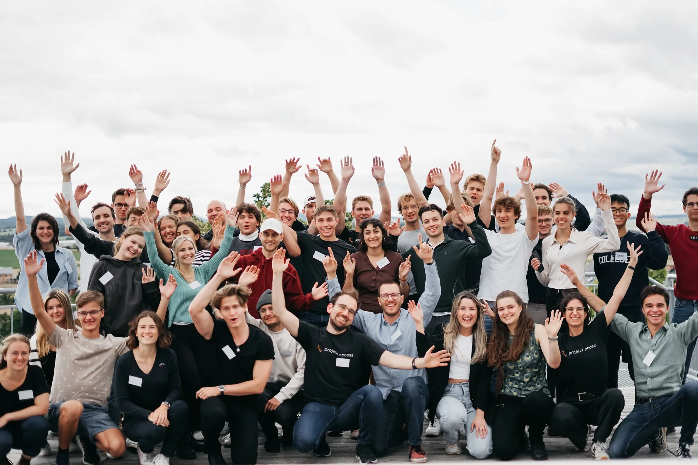
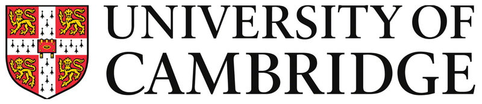
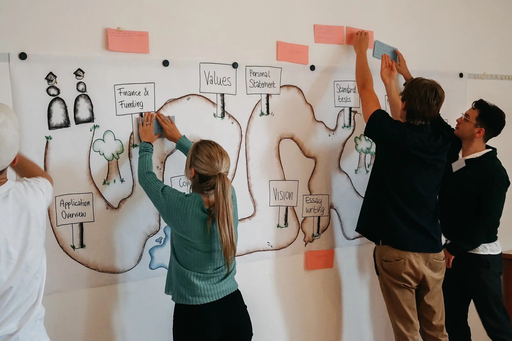

Become a mentor
For students and alumni of international universities.
Use your experience to support applicants through essays, interviews and selection processes.
Bootcamp
Horn, Lower Austria
Read more →We help students in Austria apply to international universities, for free: through one-to-one mentoring, the bootcamp and honest feedback from people who have been through it.

Our mentees successfully apply to





About Project Access
Project Access Austria supports students from Austria and South Tyrol who are applying to selective international universities. We connect them with students and alumni who have been through the process themselves, while also being part of the wider Project Access network.
Learn about Project Access International →Programme
A personal mentor for questions, feedback and the next steps in your application.
Four days for course choices, essays, interviews, funding and conversations with other applicants.
Clear resources on course choice, funding, essays and interviews, before and after the bootcamp.
A network of applicants from Austria and South Tyrol who are working through similar decisions.

At the bootcamp, students work on their applications in small groups. We cover course choice, essays, interviews and funding. Bachelor, master and PhD applicants are welcome.
Become a mentor
Use your experience to support applicants through essays, interviews and selection processes.
PA Austria team
Organisation, communications, events and tech – volunteer-run, remote and on site.
Schools
We visit schools across Austria for short, free info sessions.
Sponsoring & partnerships
Companies, foundations and private supporters help us keep the bootcamp, mentoring and guidance free.
Partner quote
We at McKinsey are deeply convinced that more diverse teams perform better. It is our pleasure to support Project Access, where talent and passion determine someone's path in education, rather than socio-economic background.
Can you contribute space, expertise or sponsorship? More about partnerships
Current updates
We announce webinars, school visits and application deadlines on Instagram and in our newsletter.
Events & archive →In the press